Bối cảnh hệ thống
Actors, SmartReview và các hệ thống ngoài

Hiện trạng suy từ source; các kết nối tùy chọn chưa được chạy xác nhận. Phần schema chưa có workflow và blocker Docker có nhãn riêng. Các workflow thay thế / tùy chọn được ghi trên mũi tên, không có nghĩa mọi bước đều chạy trong một request.
Actors, SmartReview và các hệ thống ngoài
Browser, Node, Python, MySQL và storage
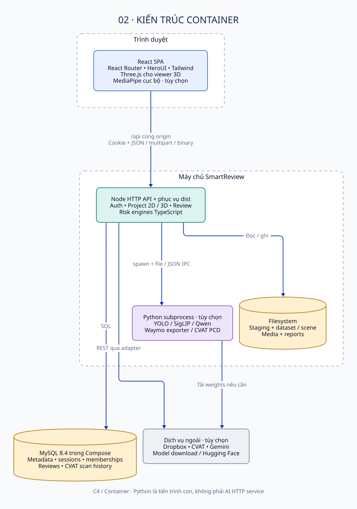
Routes, auth, feature modules, API client và viewer
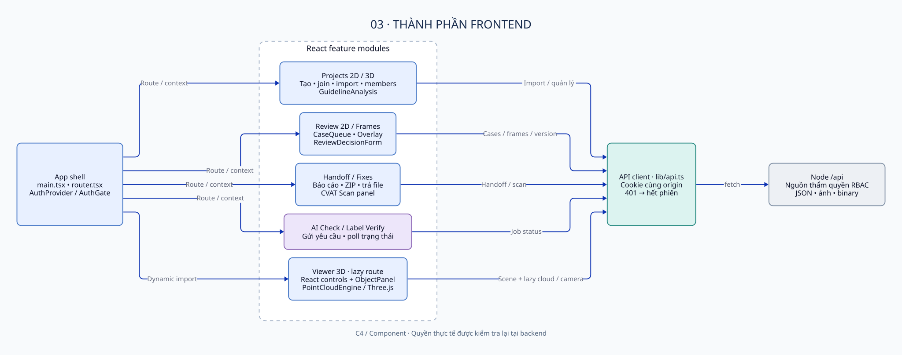
HTTP, domain services, core và persistence
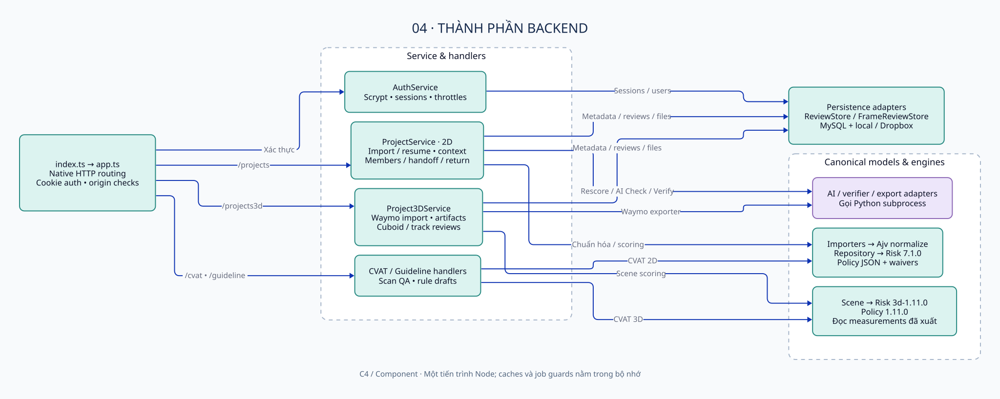
Import rescore / AI Check / Label Verify và tác động dữ liệu
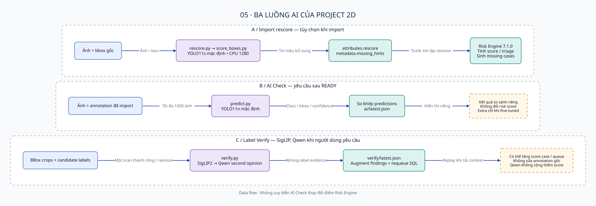
Keys, cardinality và ownership; bản rút gọn
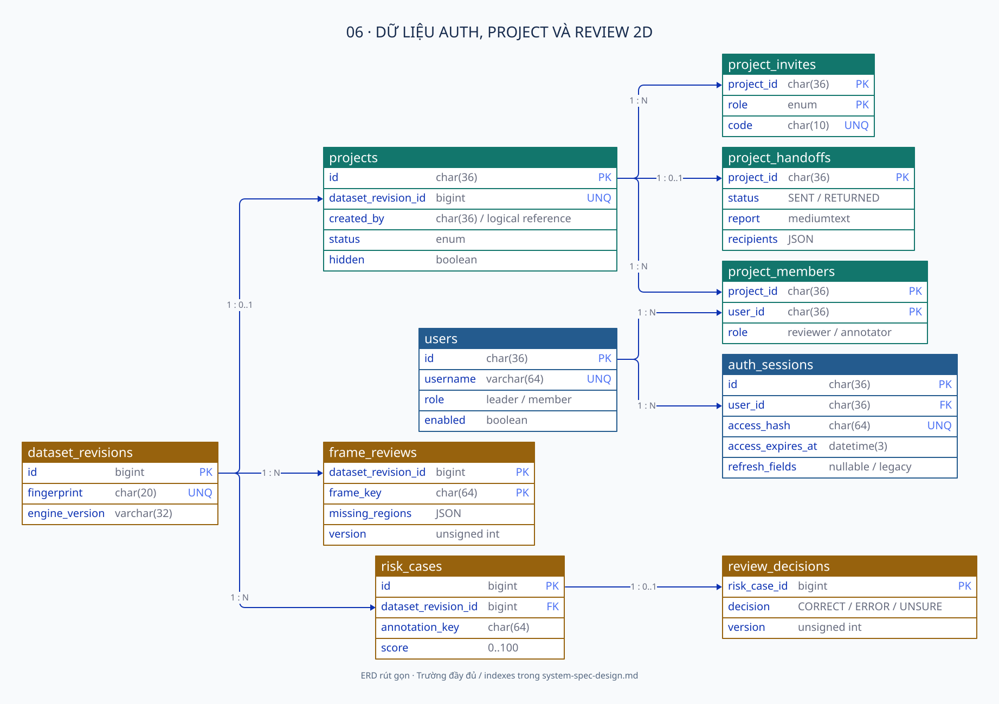
Bảng riêng, shared users và schema chưa có workflow
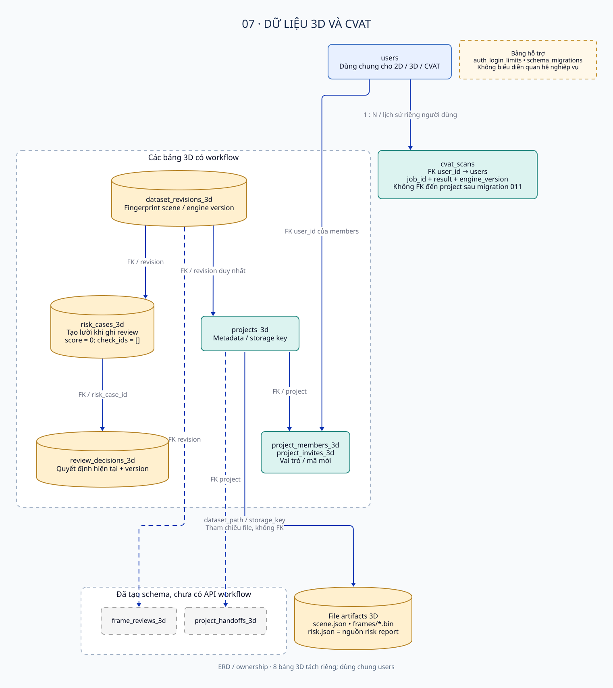
Phần xử lý request và finish nền
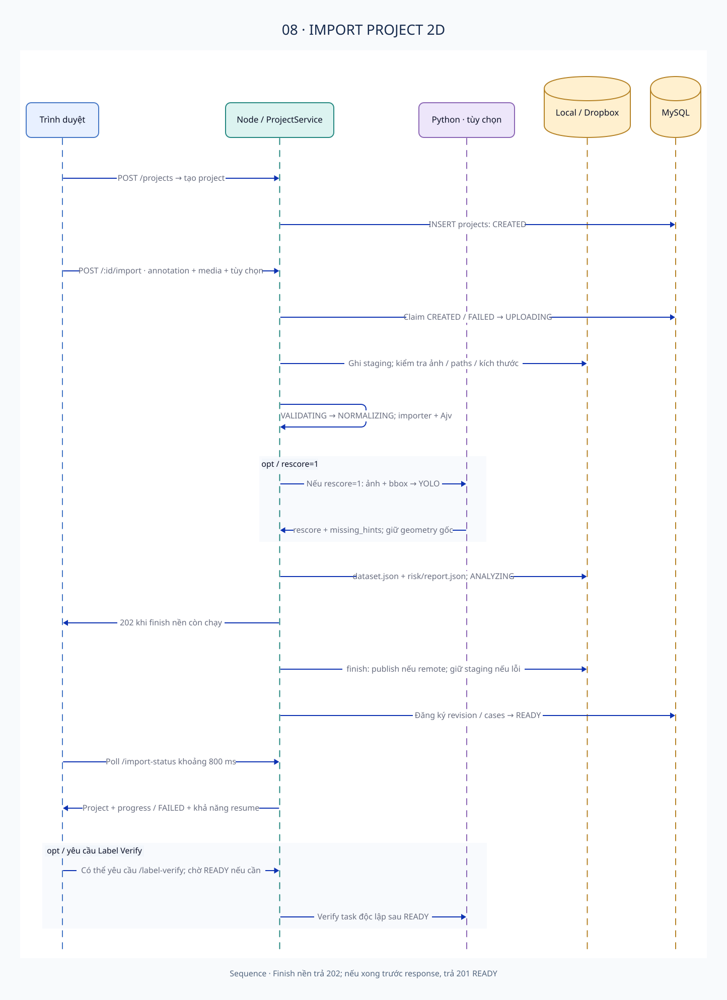
Version, lock, sửa ngoài và revision mới
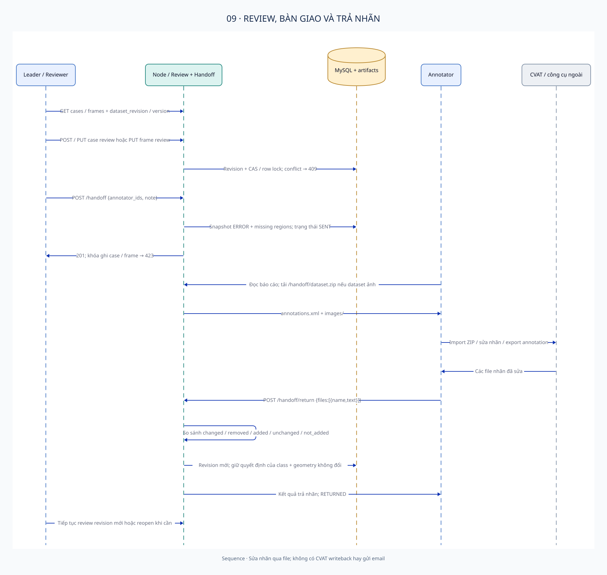
Export, scoring, lazy viewing và review
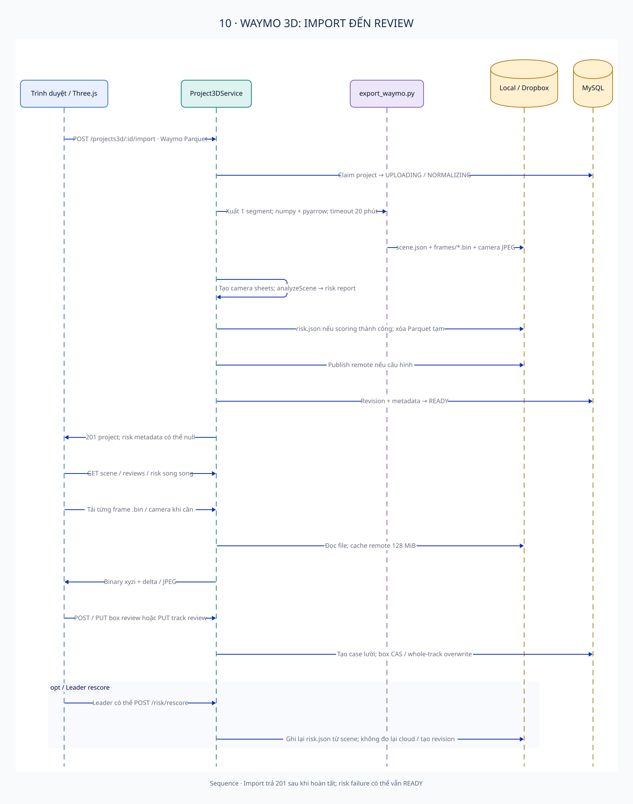
Nhánh 2D / 3D và lịch sử theo user
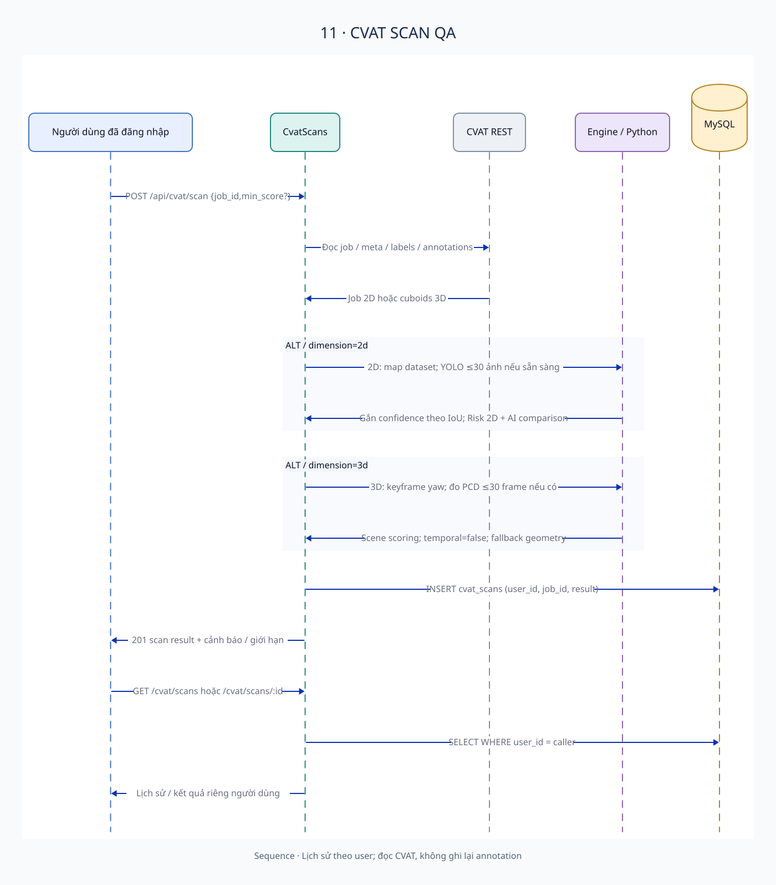
Gemini drafts, lựa chọn của con người và giới hạn thực thi
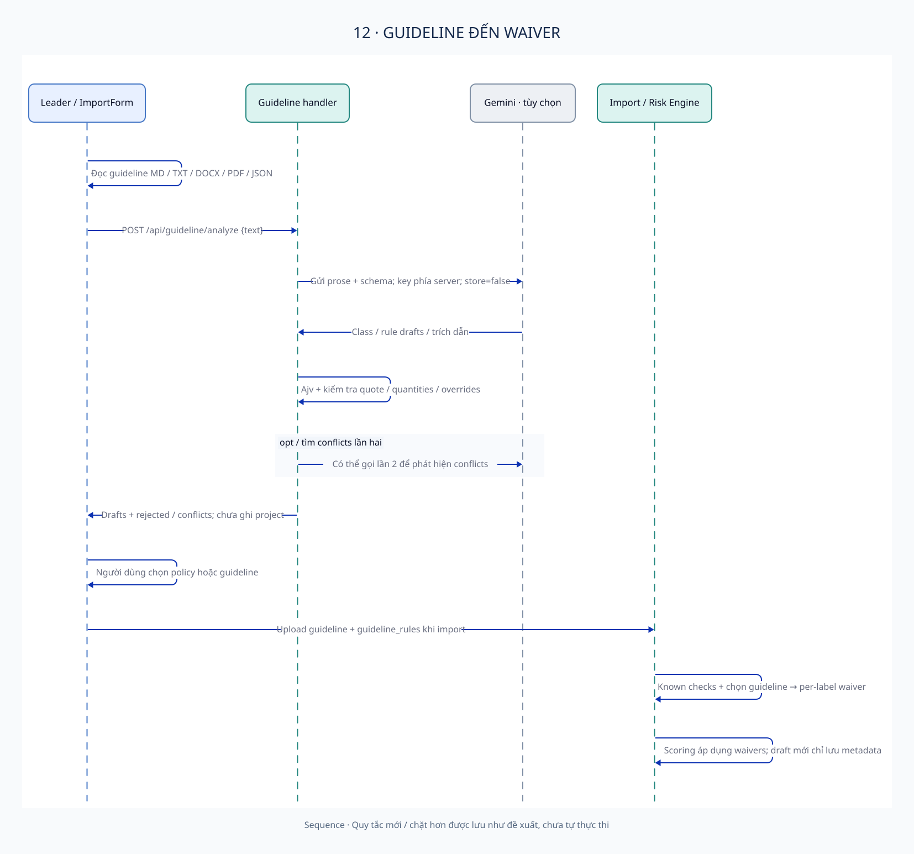
Native / Compose và blocker đóng gói xác định tĩnh
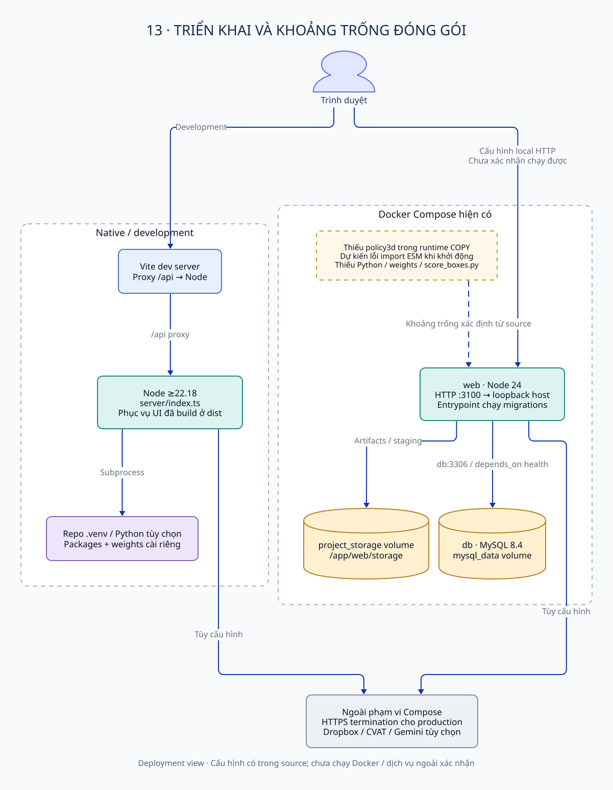
D2 0.9.0 / ELK · Noto Sans (SIL OFL 1.1) · Không dùng Mermaid cho sơ đồ chính · © Hồ sơ kỹ thuật theo source SmartReview